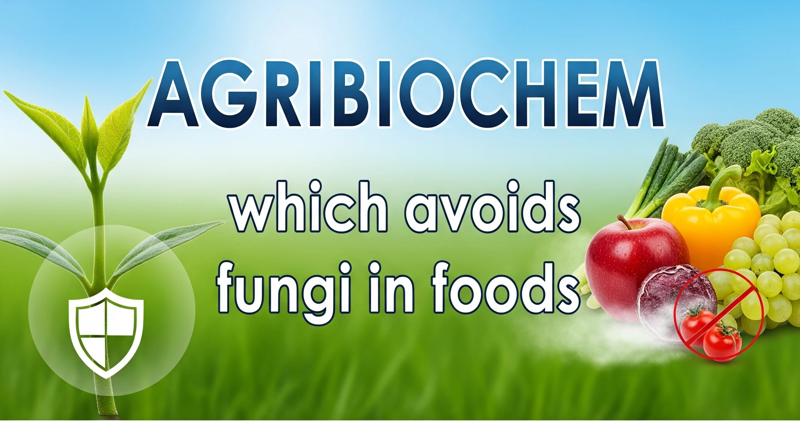

🌱 A legacy of resilience and innovation. Our milestones showcase passion, teamwork, and trust.
Our Journey
From humble beginnings to becoming a trusted industry leader, our journey reflects resilience, innovation, and the unwavering support of our dedicated team and customers.
Who We Are
We are a community of innovators, creators, and problem solvers. Our story is best told through the impact we create.
0
Years of Experience
0
Happy Clients
Vision & Mission
Our vision is to shape the future with sustainable solutions and groundbreaking innovations. Our mission is to empower businesses and individuals through technology-driven excellence.

🌍 Our Commitment: Sustainability, Innovation & Excellence to transform tomorrow.
Frequently Asked Questions
With our vast experience, we can detect every type of pest and its destructive nature.
We know when they become active and when they remain dormant. We will give you an immediate solution within the shortest time.
Our pest cleaning and elimination products are clean and green.
Ask the experts at Agri Biochem and you can get the most trusted solutions today.
You can get complete freedom from flies, bedbugs, ants, termites, cockroaches, rats, and so many other species.
We keep your home hygienic, healthy, and safe forever.
Our commercial pest control covers business centers, warehouses, industrial plants, hospitals, hospitality sector, and more.
We can cover the smallest and the largest buildings and plants with our technology and manpower.
We have a fully equipped laboratory and testing equipment for analyzing pest behavior and biology.
- Research on pesticide resistance removal
- Development of biological pesticide solutions
- Prevention of pest growth and expansion
- New controls based on the latest technology
- Detection and elimination of smallest to biggest pests
- Continuous control, removal, and prevention
Have you ever felt sick after a pesticide spray?
That is because of toxic elements in the air. At Agri Biochem, we manufacture the safest and cleanest pesticides.
Your home and commercial establishment are completely safe and protected.
Our manufacturing methods conform to Indian and ISO quality standards. We monitor ingredient ratio, safety factors, effectiveness, permanence, and eco-friendliness.
Our manufacturing methods conform to Indian and ISO quality standards. We monitor ingredient ratio, safety factors, effectiveness, permanence, and eco-friendliness.
The world trusts us because of our:
- Pesticide specialists with decades of industry experience
- Understanding of pest behavior to pesticides
- Continuously evolving products
- Ability to R&D for every pest species
We test all our products intensely before releasing them on the market.
Our testing procedures involve:
- Child and elderly safety
- Employee safety at commercial establishments
- Safety for pregnant women
- Safety for those with lung and heart problems
Users from homes, business, agriculture, industries, and other commercial establishments choose Agri Biochem because of our specialized products:
- Eliminate thousands of pest species
- Shorten the lifespan of pests
- Prevent pest reproduction
- Remove all types of insects
- Keep your place and things fresh
- Work instantly
- Control pests in all possible stages